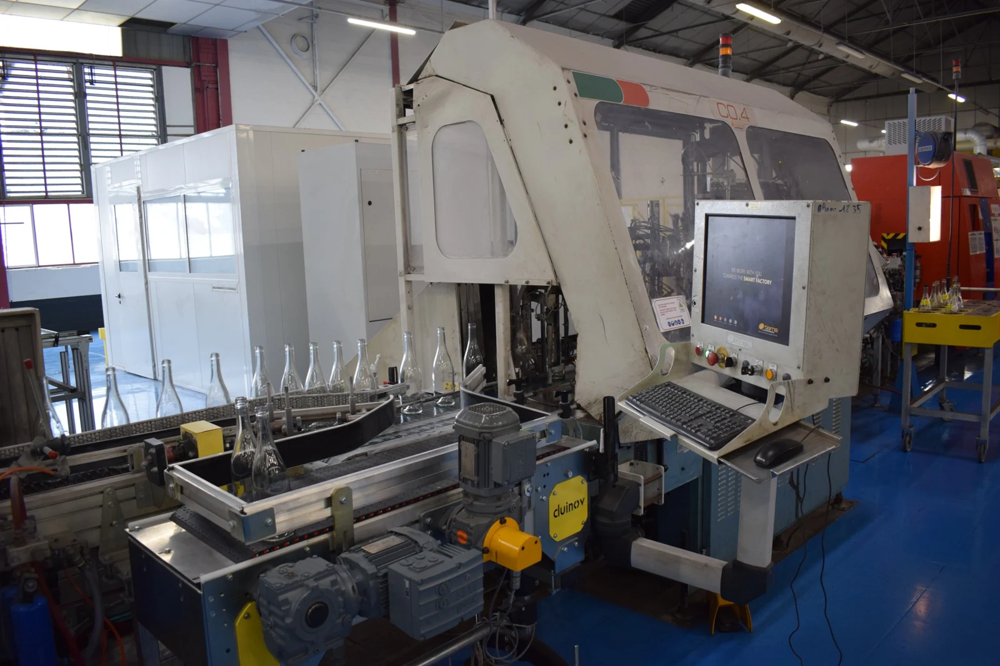
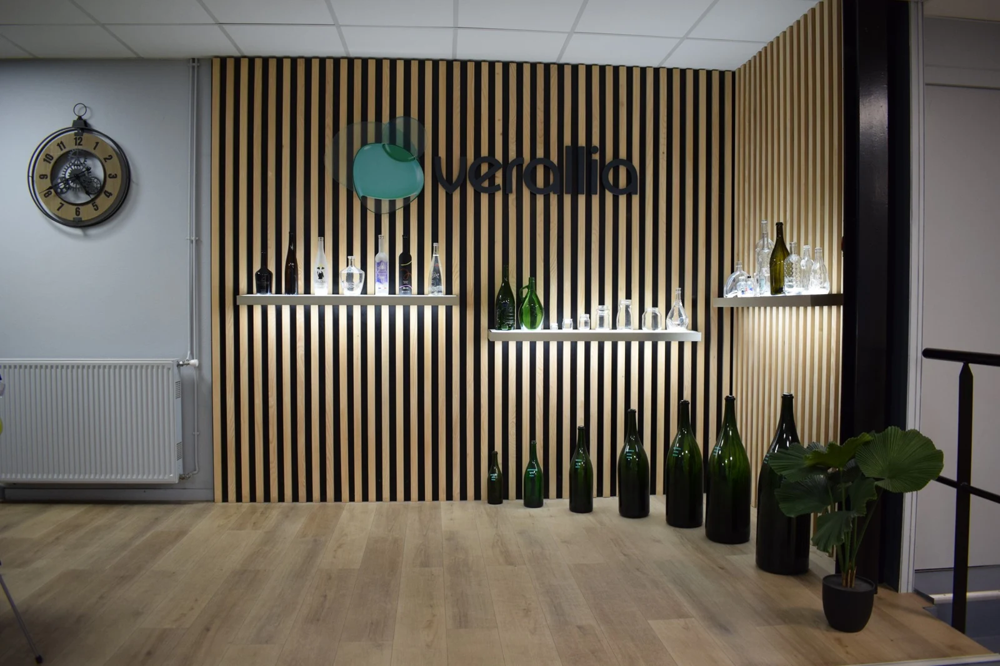

Vidéo 360° · Unity · Gestion de projet
Verallia — visite immersive
Faire découvrir la fabrication du verre à travers une visite immersive de l’usine de Chalon-sur-Saône.
- Rôle
- Chef de projet
- Périmètre
- Cadrage · Coordination · Développement
- Support
- Application VR · Vidéos 360°
Le projet en bref.
- Le besoin
- Faire découvrir une usine et les étapes de fabrication du verre dans une visite immersive destinée à un public extérieur à l’entreprise.
- Mon rôle
- Assurer le rôle de chef de projet : relation entreprise–équipe, cahier des charges, développement Unity, suivi et comptes rendus.
- Le résultat
- Une visite virtuelle appuyée sur des séquences à 360°, accompagnée de scénarios, de documents de cadrage et d’exports de l’application.

01 / Faire découvrir le site industriel
Faire découvrir le site industriel
Verallia souhaitait faire découvrir son usine de Chalon-sur-Saône et expliquer les étapes de fabrication du verre à travers une expérience immersive. La visite virtuelle permet de présenter différents espaces du site à partir de vidéos à 360° et de contenus explicatifs. Le projet s’adresse à des personnes qui découvrent l’entreprise, ses métiers et ses procédés. Le besoin initial devait donc être traduit en un parcours compréhensible, puis en une application utilisable dans un casque.
Le scénario suit le processus de production, depuis la fusion du verre jusqu’aux étapes de contrôle et de préparation des produits. Chaque zone doit trouver sa place dans ce parcours et apporter une information utile à la compréhension de l’ensemble. La démarche associe ainsi une dimension de communication industrielle à un travail de réalisation numérique. C’est dans ce cadre que j’ai assuré le rôle de chef de projet, en lien avec l’entreprise et l’équipe.
02 / Mon rôle de chef de projet
Mon rôle de chef de projet
J’ai pris en charge le projet de manière transversale : relation entre l’entreprise et l’équipe, élaboration du cahier des charges, développement de l’application et rédaction des comptes rendus. Mon rôle consistait à faire le lien entre les attentes exprimées et leur traduction dans une expérience réalisable. Le cadrage permettait de formaliser le besoin, tandis que les échanges et les comptes rendus accompagnaient le suivi des étapes et la circulation des informations.
Cette responsabilité se prolongeait dans la réalisation technique. J’ai développé l’application et intégré les contenus dans Unity, en reliant le scénario aux différentes séquences de la visite. Le projet illustre donc une implication à la fois dans l’organisation du travail et dans la production du résultat. Les documents de cadrage, les scénarios, les vidéos et les versions de l’application constituent les traces de ces différentes dimensions.
- Relation entreprise / équipe : échanges, coordination et suivi des besoins.
- Cadrage : élaboration du cahier des charges et formalisation des attentes.
- Développement : réalisation de l’application et intégration des contenus dans Unity.
- Suivi : rédaction des comptes rendus et accompagnement des étapes du projet.
03 / Organiser une visite à 360°
Organiser une visite à 360°
La visite est organisée en étapes qui correspondent aux espaces et aux procédés à présenter. Les scénarios précisent la progression, les informations à transmettre et les contenus qui accompagnent les images. Les vidéos à 360° sont ensuite intégrées dans Unity pour placer le visiteur au sein de chaque séquence. Des éléments explicatifs complètent les images afin de guider la compréhension du fonctionnement de l’usine.
Le système de visite gère l’activation des séquences, leur durée, le positionnement de la caméra et les transitions en fondu entre les étapes. Il organise également l’apparition des contenus explicatifs au fil du parcours. Ces fonctions permettent d’articuler les prises de vue et les informations dans une expérience continue. Le travail d’intégration donne ainsi une forme interactive au scénario défini en amont, en tenant compte de la présentation dans le casque.


04 / La visite en vidéo
La visite en vidéo
Le projet associe les images de l’usine à un parcours de découverte de la fabrication du verre.
05 / Du besoin à une application
Du besoin à une application
Le projet a abouti à un ensemble de livrables complémentaires : cadrage, scénarios, contenus vidéo, projet Unity et exports de l’application au format APK. La vidéo présentée dans cette fiche donne un aperçu de la visite retenue pour le portfolio. Ces supports permettent de montrer la progression entre la demande initiale et sa traduction en expérience numérique, ainsi que la diversité des tâches nécessaires à cette réalisation.
Verallia représente une expérience centrale dans mon parcours de gestion de projet. J’y ai assuré la coordination avec l’entreprise tout en participant directement à la production technique. Ce lien entre cahier des charges, échanges, développement et suivi est ce que je souhaite mettre en avant : comprendre un besoin, l’organiser et le porter jusqu’à une réalisation concrète. La fiche présente ce rôle global, en complément des images de l’application.

Gestion de projet · Réalité augmentée
Little Archeologist
Un autre projet collectif associant coordination, conception et production.

LIRMM · ÉQUIPE ADVANSE · STAGE DE FIN D’ÉTUDES
Concevoir une expérience VR accompagnée par l’IA.
Explorer un prototype plus long, de l’analyse du besoin aux tests utilisateurs.